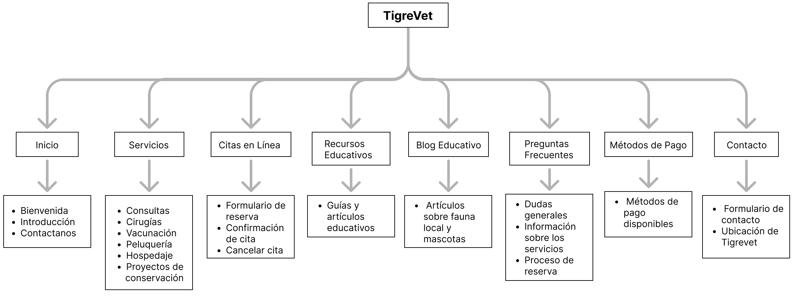

Avances
Introducción
La Clínica Veterinaria TigreVet se dedica a brindar servicios veterinarios para mascotas y actividades de conservación de la fauna local. Su misión es asegurar el bienestar y la salud de las mascotas, mientras que también se enfoca en la protección y cuidado de la fauna local.
El sitio web busca ofrecer a los dueños de mascotas un espacio confiable para obtener información sobre los servicios de la clínica, gestionar citas en línea y acceder a recursos educativos sobre el cuidado de sus animales y la conservación de la fauna.
Público objetivo
El público objetivo está compuesto por adultos de entre 23 y 65 años, sin distinción de género, de clase media a alta, que son dueños de mascotas o interesados en la fauna local.
Este grupo se caracteriza por su compromiso con el bienestar animal, su disposición a invertir en servicios veterinarios de calidad y su interés en la conservación de la fauna.
Además, parte de este público busca sitios que les ofrezcan acceso rápido a información y la posibilidad de gestionar citas en línea.
Identidad visual
Logo
Favicon
Tipografía
Roboto
Paleta de colores
#FFFFFF
#D9D9D9
#B6B6B6
#FDCF3B
#FAE6A6
#000000
La identidad visual de TigreVet está pensada para transmitir de manera clara los valores de la clínica: el cuidado de las mascotas y el compromiso con la fauna local. El logo combina una pata de animal con hojas y representa esta doble misión, mientras que el corazón en el centro remarca la idea de bienestar y compasión hacia los animales.
El favicon simplificado mantiene la coherencia visual y asergura que la identidad de TigreVet sea fácilmente reconocible. Además, la tipografía elegida es clara y moderna, y facilita la navegación asegurando una experiencia cómoda para los usuarios.
La paleta de colores incluye tonos cálidos como el amarillo, que crea un ambiente cercano y confiable para los usuarios, mientras que los grises agregan un toque de profesionalismo. Estos colores ayudan a transmitir la imagen de TigreVet como un espacio donde las personas pueden confiar el cuidado de sus mascotas.
Mapa de sitio
Prototipo
Roles
Facundo Shlamovitz
Micaela Caputo
Sofia Fernandez
Sebastián Fernandez
Programador
Maquetadora
Diseñadora UX/UI
Comunicador Web